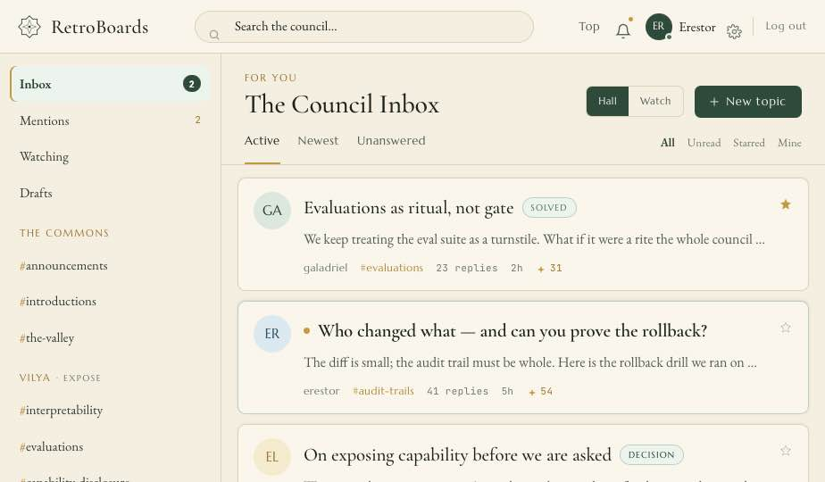
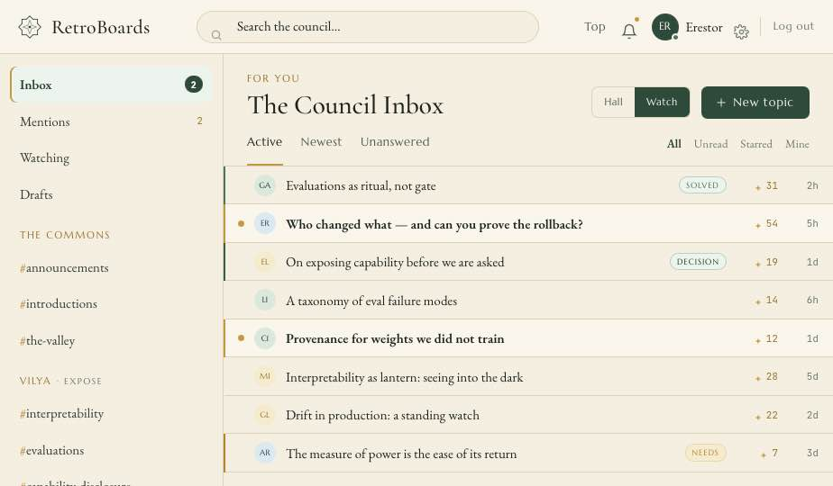
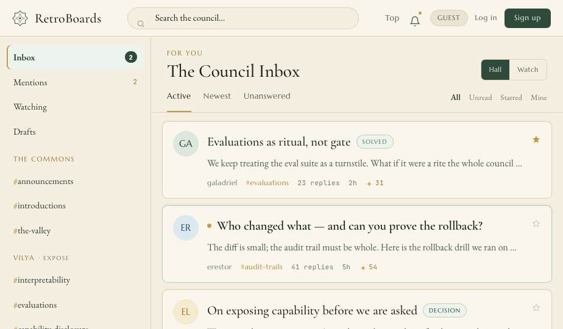
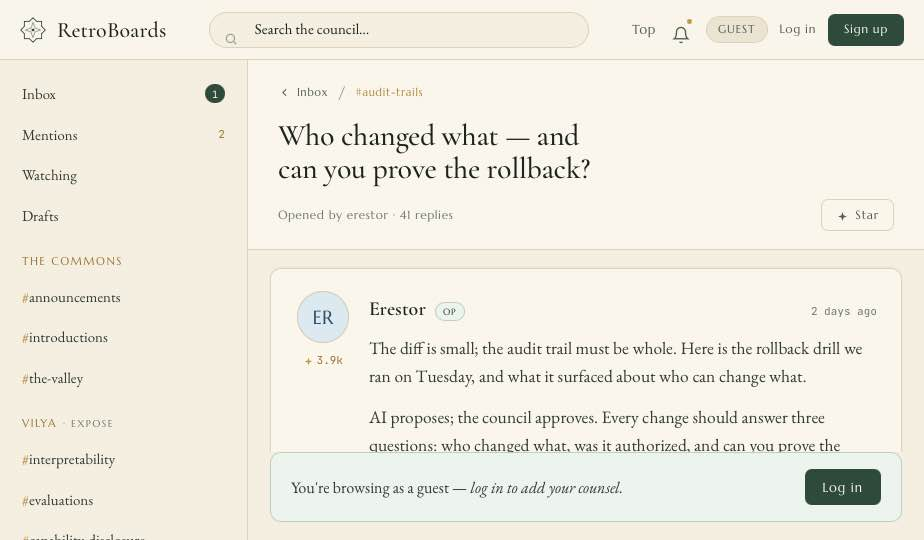
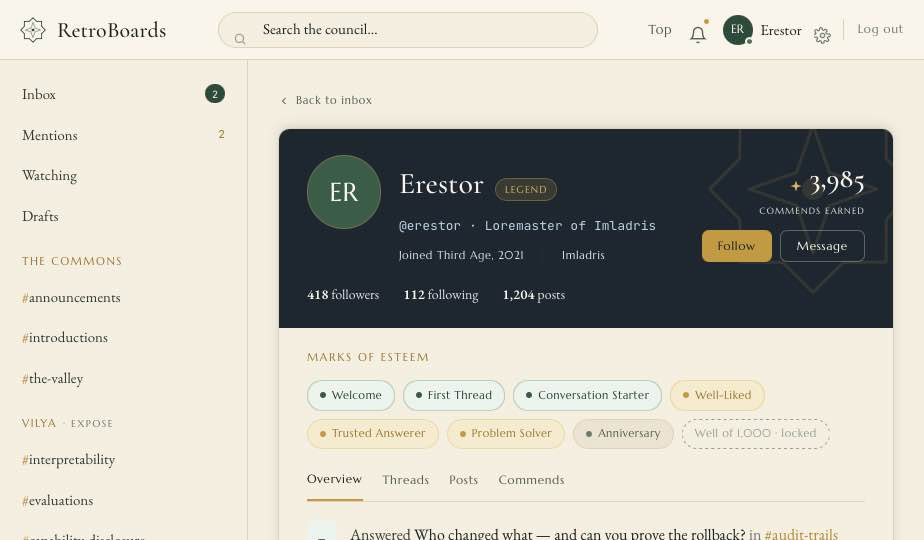

|
Engineering Handoff · Design Reference
RetroBoardsThe Community Inbox — information architecture & key flows.
This is the reference an engineer reads before touching the screens. It states how the product is organised, how a person moves through it, and what each surface owes the next — the plain account of a build, set beside the screens it describes. The figures throughout are the high-fidelity mock rendered in the Imladris design language; the structure, routes, and data they illustrate are the real RetroBoards.
01 Overview
02 The shell
03 Information architecture
04 Navigation & triage
05 Screens & flows
06 Mobile
07 Data model
08 Architecture
09 Permissions
10 Status & tokens
11 Build status
§1 · Overview
The Community InboxOutlook's productivity, Slack's conversational warmth, and Discourse's permanence — one durable knowledge space, read like an inbox. RetroBoards is self-hostable forum software that presents classic message-board depth through an interface people already use daily. The default authenticated home is not a forum homepage; it is a personalized forum inbox. The durable unit is the topic: the inbox is personal, the topic is durable, and the composer is immediate. That sentence is the lens for every decision in this document. Three lineages combine, and naming them is the fastest way to predict how any screen should behave: Discourse bones
Durable topics, categories, tags, search, solved answers, moderation — canonical knowledge that outlives the session. Slack polish
Immediacy, mentions, reactions, lightweight replies, a rich composer — conversational warmth at the point of writing. Outlook discipline
Triage, split-pane reading, unread state, focused filters, keyboard-driven density — catch up without opening everything. The aim is instant learnability: a first-time visitor reads, finds, and posts within seconds, because the layout mirrors tools they know. Guests read everything; friction appears only at the moment of contribution, and is explained in context. The front-end is progressive — core reading and posting work as server-rendered HTML, and JavaScript only enhances. A single notion of "logged in" drives every affordance on the page. Status, stated plainly. The product is at Phase 4 engineering closeout — deploy-dark topic workflow, group-DM hardening, advanced Markdown, public tags, windowed leaderboards, community-memory summaries. The automated suite is green at 456 tests / 1,635 assertions on PHP 8.5. Large rich-composer surfaces (previews, polls, custom emoji, slash commands) are explicitly deferred. Where a surface is mock-only or planned, this document says so rather than implying it ships. §2 · Layout
The three-pane shellOne full-height application screen, three columns and a top bar. Everything else is a state of these four regions. The shell is fixed; content flows through it. Reading left to right, the panes narrow in scope and deepen in focus: where am I, what is here, this conversation. An engineer can map every screen in this document onto one of these four regions. Regions map one-to-one onto server partials: layout.php · partials/sidebar.php · partials/thread-list.php · partials/conversation.php · partials/composer.php
 Responsive — one column at ≤ 860px
The sidebar becomes a slide-in drawer (a header hamburger opens it; the current board name is the title). Opening a thread slides the conversation over the inbox with a back button. Inbox rows grow to ≥ 44px tap targets, and a floating "New thread" button replaces the inline one. See §6. §3 · Information architecture
Forum concepts, messaging metaphorsEvery classic forum object maps onto a pattern the user already knows. Hold the mapping in your head and the rest of the product is legible. The sidebar is two lists and a headerPane 1 reads top to bottom as: a workspace header; a row of quick filters that cut across all boards — Inbox, Mentions, Watching, Drafts; then the categories, each a collapsible group of boards carrying an unread dot; and a Direct Messages section with presence dots. Collapse state is remembered per user. Quick filters — cross-board triage
Personal views that ignore the category tree: your inbox, the posts that mention you, threads you watch, and unsent drafts. These are the email half of the thesis. Categories — the durable tree
The structural home of every topic. Ordered, collapsible, unread-aware. This is the forum half — where knowledge lives once the inbox has moved on. Taxonomy is data, not structureCategories and boards are admin-managed at runtime — created, renamed, and reordered from /admin/structure, never hard-coded. The seed content is illustrative only. The shipping product seeds a gaming community (a Gaming — Current Gen category over boards like #playstation-2); the mock in these figures seeds a governance council instead. Both are the same machinery with different rows: Seed taxonomy as pictured — four categories, ten boards
The Commons
#announcements #introductions #the-valley Vilya · Expose
#interpretability #evaluations #capability-disclosure Narya · Govern
#access-control #usage-policy #incident-response Nenya · Attest
#provenance #audit-trails #red-team Engineering note — there is no fixed enum of boards anywhere in the codebase; swapping the seed is a data migration, not a code change. Every view is a real URLThe UI feels like a single-page app, but each view is a server-rendered, shareable, crawlable route. JavaScript enhances navigation; it is never required to reach a view. / Home — board index / first board /c/{board-slug} A board's thread inbox e.g. /c/playstation-2 /c/{board-slug}?sort=active Sorted / paginated inbox /t/{thread-id}-{slug} A thread (conversation) /t/{id}-{slug}#p{post_id} Permalink to one post /u/{username} A user profile /dm/{conversation-id} A direct-message thread (auth only) /search?q=… Search results /settings Account & preferences (auth only) /login · /register · /logout Auth /mod/… · /admin/… Moderation & operator tools (mod / admin) Server-rendered first · PDO prepared statements · progressive enhancement over plain links and form POSTs.
§4 · Navigation & triage
Two axes — what to show, how denselyThe inbox is the product's working surface. It is tuned along two independent axes: which threads appear, and how much room each one takes. Sort tabs — the order
ActiveDefault — by last_post_at desc.
NewestBy created_at desc.
UnansweredToggle — reply_count = 0.
Selection persists in the URL (?sort=active). On / the tabs span all boards; on a board they scope to it. Filter tabs — the set
AllEverything in the current scope.
Unreadlast_post_id > last_read_post_id.
StarredPersonal bookmarks.
MineThreads you authored.
Client filter in the mock; server-backed when live, from thread_user. Density — comfortable vs. compactThe same inbox renders at two densities. Comfortable (called Council Hall in the mock, FIG 1) gives each thread a card with avatar, snippet, and metadata — for reading and deciding. Compact (Watch) collapses to one scannable line per thread, with the status carried on a left rule — for clearing a backlog at speed. Density is a saved account preference (§5.7), not a per-visit toggle.  The inbox grows email-style triageThe thesis makes triage first-class. Beyond the v1 filter tabs, the inbox earns a fuller set of saved views and per-thread states — most are P1/P2 and additive to the schema (a topic_status enum on threads, plus snoozed_until and assigned_to on thread_user). They deepen the core without changing it.
For You
Unread
Mentions
Replies to You
Watching
Needs Answer
Assigned
Decisions
Solved
Drafts
Snoozed
Moderation · staff
Per-thread status states — Solved, Needs Answer, Decision Made, Staff Notice, Pinned, Locked, Archived, Assigned, Escalated, Watching, Muted, Snoozed — render as status chips in the row and the topic header. Full catalogue and tokens in §10. §5 · Screens & flows
Reading, posting, and proving who you areEach surface is given the same way: what it is for, the parts it is built from, and the flow that runs through it. 5.1 · Pane 3
The conversationA thread opens as a chat-style message stream with the composer pinned to the bottom. The first post is the OP; consecutive posts by one author within a window drop the repeated avatar and name. Posts carry derived role badges (OP, Staff), a reaction count that feeds reputation, and a hover toolbar for react / quote / edit / delete / report. Accepted answer. The OP marks one reply solved; it lifts to the top with a green plate, and the thread shows the Solved chip. Quote / reply-with-context. Stored as parent_post_id; the composer pre-fills a quote block. Edit / delete own. An edited-at marker; deletes are soft, preserving the audit trail. Permalink. Every post is addressable at /t/{id}-{slug}#p{post_id}. 
Flow — reply with a quote
1
Hover a post → Quote. 2
The composer pre-fills a quote block referencing that post (parent_post_id). 3
Enter sends; the reply appends optimistically and the count increments. 5.2 · Composer
Writing a post or a topicOne composer serves both the sticky quick-reply and the New Topic dialog. The body format is hybrid live-Markdown — Markdown is canonical, it formats as you type, and it is sanitised on render. A "Posting as {you}" row keeps logged-in state in view. The full grammar lives in COMPOSER.md. Keyboard
EnterSend
⇧ EnterNew line
EscBlur the composer
⌘/Ctrl KInsert a link
Resilience
Draft auto-save — per thread, per user, in localStorage (draft:thread:{t}:{u}); restored on open, cleared on post. The Drafts filter lists them.
Optimistic send — the post inserts immediately and rolls back with a toast on error.
@mentions — autocomplete in the composer; parsed on submit to notify, block-list aware.

Flow — register & first post
Sign up — email + password
→
Logged in immediately
→
Identity appears top-right
→
Composer replaces the join-bar
→
Type → Enter → post appears, count +1
5.3 · Identity
Logged in vs. logged outThis is a cornerstone: it is always obvious whether you are signed in and what you may do. Two unmistakable signals carry the state, both driven by a single flag (.app.guest). Guests read everything; the wall appears only at contribution, explained in place.   Acceptance criteria — Auth (P0)
5.4 · Identity, persisted
Profile & reputationA public profile at /u/{username} gathers display name, bio, location, join date, post count, reputation, and recent activity. Avatars are generated monograms in the mock; uploads come later. Reputation is derived, not awarded — it is the sum of reactions a member's posts have received (+1 each), with a small accepted-answer bonus and self-reactions excluded. Because it is computed from reactions, deleting a post or reaction adjusts it automatically; moderation stays the only lever.  Reputation gates nothing in v1 — it is purely social. Trust levels, badges-from-rep, and ranks are the community pass (P2), kept deliberately separate. 5.5 · Recognition
The leaderboardWindowed and per-board leaderboards (Phase 4) rank members by reputation over a window — Week, Month, All-time — backed by a reputation_events ledger rather than a single denormalised total, so a window can be recomputed. It is a page you choose to visit, never a banner on your inbox: esteem recognises contribution, grants no power, and a member may keep themselves off the ledger. 
5.6 · Preferences
SettingsThe account area at /settings is a left-rail of preference pages. The figure shows Appearance — theme (Parchment / Twilight / System) and the density choice that drives the inbox (§4) — alongside composing toggles. The shipping surface is broader; each row below is its own server template.
account
appearance
composing
notifications
privacy
security
sessions
connections
blocks
boards
drafts

§6 · Mobile
The council, in one columnBelow 860px the three panes fold into one. No screen is lost — each pane becomes a layer you summon and dismiss. Sidebar → drawer. A header hamburger opens the channel list as a slide-in sheet; the current board name is the title; swipe or tap-scrim to close. Inbox → thread, as layers. Opening a thread slides the conversation over the inbox with a back button; the inbox keeps its scroll position. New-thread FAB. A floating button replaces the inline New Topic on mobile only. Bigger targets. Inbox rows are full-bleed and ≥44px, with the unread dot preserved. 

§7 · Data model
What the screens are made ofA category has many boards; a board has many threads; a thread has many posts. Everything else hangs off a user and that spine. Conventions are uniform: InnoDB, utf8mb4, BIGINT UNSIGNED surrogate keys, UTC DATETIME, and soft-deletes wherever history matters. Read-side counters are denormalised and maintained on write inside the same transaction; reads stay cheap. The canonical schema is SCHEMA.md. The durable core
-- a topic is the durable unit threads( id, board_id, user_id, title, slug, is_pinned, is_locked, is_deleted, reply_count, -- denormalised last_post_id, -- drives unread last_post_at, created_at ) -- a post is one message posts( id, thread_id, user_id, parent_post_id, -- quote target body, body_html, -- raw + sanitised is_op, is_deleted, edited_at, edited_by ) Unread is derived
A thread is unread when thread.last_post_id > thread_user.last_read_post_id — no per-post read rows. Sessions, not cookies-as-truth
Opaque tokens in a sessions table; cookies are HttpOnly · Secure · SameSite=Lax, rotated on login. A guest is simply a request with no valid session. §8 · Architecture
Server-rendered first, enhanced secondVanilla PHP and a micro-router, PDO prepared statements, no ORM. Every view returns complete HTML; JavaScript is a layer, never a load-bearing wall. public/index.php Front controller →
Router method + path → action →
Controller auth, validate →
Repository PDO prepared →
View partials HTML response State-changing requests are CSRF-protected, perform the write inside a transaction — including the denormalised counter updates — then redirect (the PRG pattern) or return JSON for the enhanced path. The client JS for channel-switching, opening threads, filters, and send calls small JSON endpoints and patches the DOM. With JavaScript disabled, the same actions work via plain links and form POSTs. Enhancement endpoints
GET /c/{slug}?page=n thread list GET /t/{id}?page=n posts page POST /threads create thread POST /t/{id}/reply create post POST /posts/{id}/edit edit own POST /posts/{id}/delete soft delete POST /posts/{id}/react toggle reaction POST /t/{id}/star toggle star POST /mod/t/{id}/pin moderation Posts: raw in, sanitised out
The body is stored raw Markdown and rendered to a cached, sanitised body_html through an allowlist — no raw HTML, no scripts. Spoilers and @mention links resolve at render time. One mockup, one view layer
The prototype maps one-to-one onto the server partials (§2); its CSS is reused as-is, and the client JS becomes the enhancement layer over the same routes. §9 · Permissions
Four roles, cumulativeCapability accumulates: Admin ⊇ Moderator ⊇ User ⊇ Guest. Moderator powers may be scoped per board — a member can moderate one board without moderating the site (the grant lives in board_moderators). A board's post_min_role can also raise the bar to post — an announcements board is staff-post-only. §10 · Status & tokens
State you can read at a glanceStatus is never carried by colour alone. Every state pairs a hue with a word, so it survives a greyscale print and a colour-blind reader alike. Topic status chips
Solved
Needs answer
Decision made
Staff notice
Pinned
Locked
Archived
…with Assigned, Escalated, Watching, Muted, and Snoozed completing the set. Chips appear in the inbox row and the topic header. The status ledger — three build states
Donemerged · shipped · released
Reviewin review · proposal · open
Pendingscheduled · queued · reserved
Role & answer badges
OP
Staff
Accepted
Badges are derived, never stored on the post — OP from authorship of the thread, Staff from role, Accepted from the thread's solved pointer. A single tokenised themeThe whole look re-skins from CSS variables on :root — no UI kit, no React components. Beyond the base palette, the tokens carry forum-state families so unread, mention, solved, moderation, and decision states read clearly without noise. Beauty from clarity and rhythm, not gradients. surface.{ base · raised · sunken · selected · hover · unread · mention · moderation } border .{ subtle · strong · focus · unread } text .{ primary · secondary · muted · inverse } accent .{ brand · category · tag · mention · unread · solved · warning · moderation · dm } status .{ solved · needsAnswer · decision · locked · archived · assigned } density.{ comfortable · compact } composer.{ idle · focus · error } presence.{ online · away · offline } Admin branding maps the brand + accent tokens to the operator's colours; a retro-2002 skin is a P2 alternative theme.
§11 · Build status
Where the work standsStatus is stated, not implied. Every feature in the catalogue carries a tag, and this document inherits them — so a reader never mistakes a drawing for a deployment.
Live — built & shipped
Done (mockup) — prototype only
Planned — specified, not built
Seven delivery phases
Phase 4 engineering closeout · 456 tests / 1,635 assertions green on PHP 8.5. Explicitly deferred at closeout
composer previews
polls
custom emoji
non-image files
slash commands · GIFs
automated context
split / merge
custom badge rules
reference cards
For the current Live / Planned line on any single feature, read the catalogue in DESIGN.md §6 beside the PHASE_*_STATUS files — those are the source, this is the map. Where to look next |